1940–1960-е годы
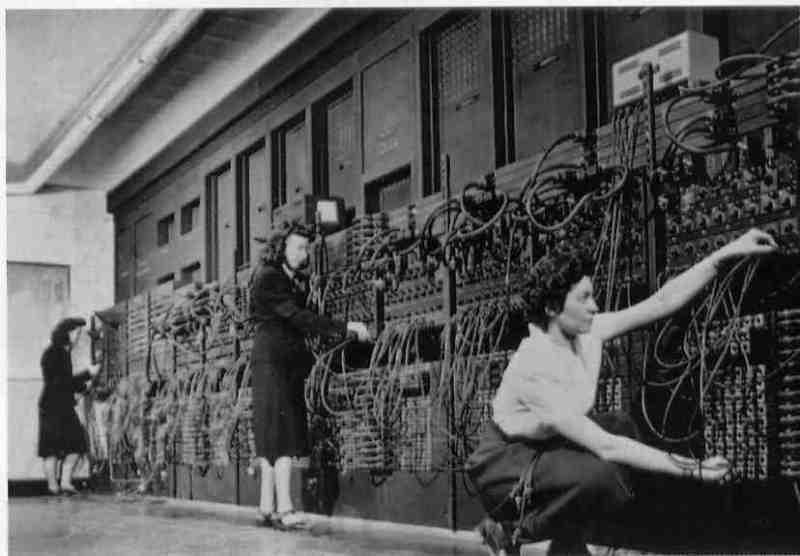Прежде чем углубляться в историю развития центральных процессоров, необходимо сказать несколько слов о развитии компьютеров в целом. Первые CPU появились еще в 40-х годах XX века. Тогда они работали с помощью электромеханических реле и вакуумных ламп, а применяемые в них ферритовые сердечники выполняли роль запоминающих устройств. Для функционирования компьютера на базе таких микросхем требовалось огромное количество процессоров. Подобный компьютер представлял собой огромный корпус размером с достаточно большую комнату. При этом он выделял большое количество энергии, а его быстродействие оставляло желать лучшего.
Однако уже в 1950-х годах в конструкции процессоров стали применяться транзисторы. Благодаря их применению инженерам удалось добиться более высокой скорости работы чипов, а также снизить их энергопотребление, но повысить надежность.
В 1960-х годах получила свое развитие технология изготовления интегральных схем, что позволило создавать микрочипы с расположенными на них транзисторами. Сам процессор состоял из нескольких таких схем. С течением времени технологии позволили размещать все большее количество транзисторов на кристалле, в связи с чем количество используемых в CPU интегральных схем сокращалось.
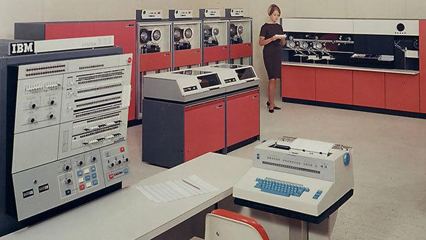Тем не менее архитектура процессоров была всё ещё очень и очень далека от того, что мы видим сегодня. Но выход в 1964 году IBM System/360 немного приблизил дизайн тогдашних компьютеров и CPU к современному — прежде всего в плане работы с программным обеспечением. Дело в том, что до появления этого компьютера все системы и процессоры работали лишь с тем программным кодом, который был написан специально для них. В своих ЭВМ компания IBM впервые использовала иную философию: вся линейка разных по производительности CPU поддерживала один и тот же набор инструкций, что позволяло писать ПО, которое работало бы под управлением любой модификации System/360.
По своей архитектуре процессор IBM System/360 являлся CISC-решением. Как вы знаете, все интегральные схемы делятся на две большие категории: RISC (Reduced Instruction Set Computer) и CISC (Complex Instruction Set Computer). Вторые работают со сложными инструкциями, а первые — с упрощенными. С точки зрения современных достижений, сложность инструкций для CISC-процессоров заключается в том, что их длина не ограничена. Вдобавок к этому они могут содержать сразу несколько арифметических действий. Однако в то время дизайн RISC не существовал в принципе, и IBM, а также другие производители использовали CISC-архитектуру вплоть до 1980-х годов.
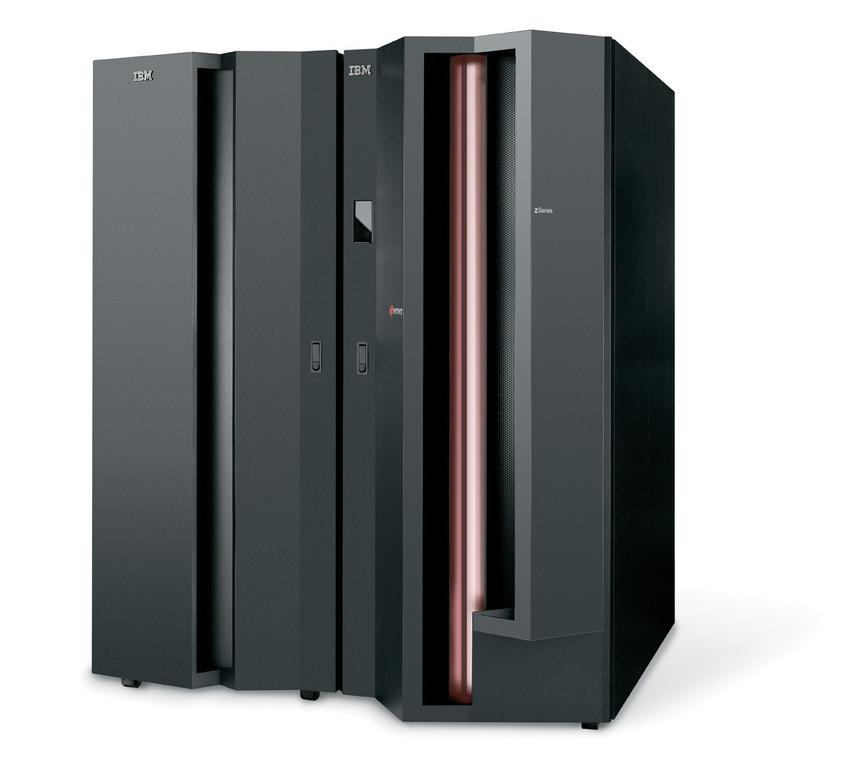У System/360 были и некоторые другие особенности. Например, в компьютере впервые был реализован 8-битный байт — до этого объем байта составлял 6 бит. Также System/360 стал первой 32-разрядной системой в истории. Также компьютер умел работать с виртуальной памятью, а старшие модели линейки поддерживали технологию виртуальных машин. Словом, процессор System/360 уже во многом напоминал современные решения.
Несмотря на высокую стоимость, System/360 стал относительно успешным на рынке. Во время презентации компьютера во всех городах США присутствовало порядка 100 тысяч бизнесменов, говорится в официальном пресс-релизе IBM от 7 апреля 1964 года. В первый месяц американская компания получила более 1000 заказов на IBM System/360 и еще одну тысячу в последующие четыре месяца. Для того времени цифры более чем впечатляющие. Компьютеры System/360 также активно использовались агентством NASA для управления космическими полетами в ходе программы «Аполлон».
Возвращаясь к теме совместимости System/360, нужно подчеркнуть, что IBM уделила очень много внимания данному аспекту. Например, современные компьютеры линейки zSeries до сих пор поддерживают работу программного обеспечения, написанного для платформы System/360.
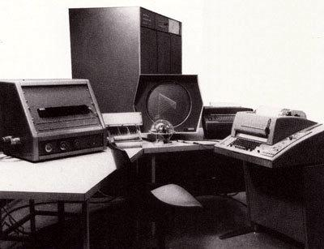Не стоит забывать и о компании DEC (Digital Equipment Corporation), а именно о ее линейке компьютеров PDP (Programmed Data Processor). Фирма была основана в 1957 году, и в 1960 году выпустила свой первый миникомпьютер PDP-1. Устройство представляло собой 18-битную систему и по размерам было меньше, чем мейнфреймы того времени, занимая «всего лишь» комнатный угол. В компьютер был интегрирован ЭЛТ-монитор. Интересно, что первая в мире компьютерная игра под названием Spacewar! была написана именно под платформу PDP-1. Стоимость компьютера в 1960 году составляла 120 тысяч долларов США, что было значительно ниже цены других мейнфреймов. Тем не менее PDP-1 не пользовался особой популярностью.
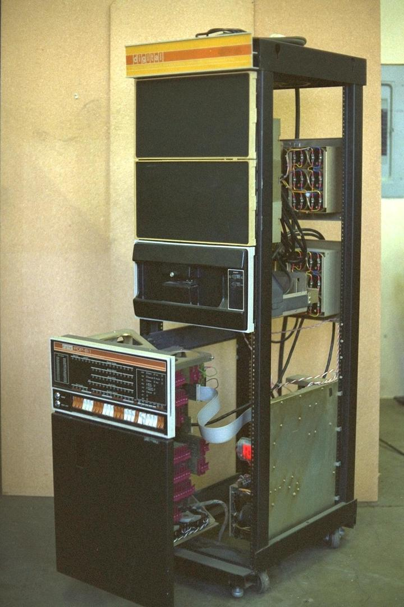Первым коммерчески успешным устройством DEC стал компьютер PDP-8, выпущенный в 1965 году. В отличие от PDP-1, новая система была 12-битной. Стоимость PDP-8 составляла 16 тысяч долларов США – это был самый дешевый миникомпьютер того времени. Благодаря столь низкой цене устройство стало доступно промышленным предприятиям и научным лабораториям. В итоге было продано около 50 тысяч таких компьютеров. Отличительной архитектурной особенностью процессора PDP-8 стала его простота. Так, в нем было всего четыре 12-битных регистра, которые использовались для задач различного типа. При этом PDP-8 содержал всего 519 логических вентилей.
Архитектура процессоров PDP напрямую повлияла на устройство 4- и 8-битных процессоров, о которых и пойдет речь далее.
Intel 4004
1971 год вошел в историю как год появления первых микропроцессоров. Да-да, таких решений, которые используются сегодня в персональных компьютерах, ноутбуках и других устройствах. И одной из первых заявила о себе тогда еще только-только основанная компания Intel, выпустив на рынок модель 4004 — первый в мире коммерчески доступный однокристальный процессор.
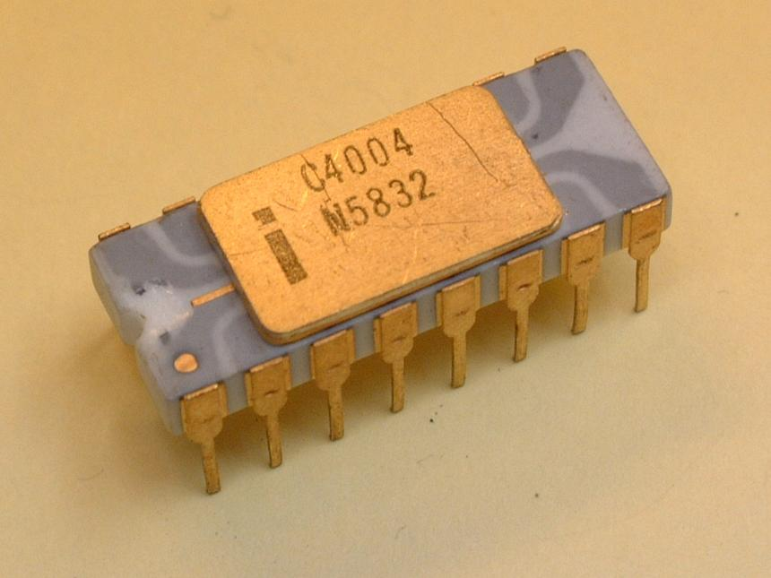Прежде чем перейти непосредственно к процессору 4004, стоит сказать пару слов о самой компании Intel. Её в 1968 году создали инженеры Роберт Нойс и Гордон Мур, которые до того момента трудились на благо компании Fairchild Semiconductor, и Эндрю Гроувом. Кстати, именно Гордон Мур опубликовал всем известный «закон Мура», согласно которому количество транзисторов в процессоре удваивается каждый год.
Уже в 1969-ом, спустя всего лишь год после основания, компания Intel получила заказ от японской компании Nippon Calculating Machine (Busicon Corp.) на производство 12 микросхем для высокопроизводительных настольных калькуляторов. Первоначальный дизайн микросхем был предложен самой Nippon. Однако такая архитектура не приглянулась инженерам Intel, и сотрудник американской компании Тед Хофф предложил сократить число микросхем до четырех за счет использования универсального центрального процессора, который бы отвечал за арифметические и логические функции. Помимо центрального процессора, архитектура микросхем включала оперативную память для хранения данных пользователя, а также ПЗУ для хранения программного обеспечения. После утверждения окончательной структуры микросхем продолжилась работа над дизайном микропроцессора.
В апреле 1970 года к команде инженеров Intel присоединился итальянский физик Федерико Фаджин, который до этого также работал в компании Fairchild. У него был большой опыт работы в области логического проектирования компьютеров и технологий МОП (металл-оксид-полупроводник) с кремниевыми затворами. Именно благодаря вкладу Федерико инженерам Intel удалось объединить все микросхемы в один чип. Так увидел свет первый в мире микропроцессор 4004.
Что касается технических характеристик Intel 4004, то, по сегодняшним меркам, конечно, они были более чем скромные. Чип производился по 10-мкм техпроцессу, содержал 2300 транзисторов и работал на частоте 740 кГц, что означало возможность выполнения 92 600 операций в секунду. В качестве форм-фактора использовалась упаковка DIP16. Размеры Intel 4004 составляли 3x4 мм, а по бокам располагались ряды контактов. Изначально все права на чип принадлежали компании Busicom, которая намеревалась использовать микропроцессор исключительно в калькуляторах собственного производства. Однако в итоге они позволили Intel продавать свои чипы. В 1971 году любой желающий мог приобрести процессор 4004 по цене примерно 200 долларов США. К слову, чуть позже Intel выкупила все права на процессор у Busicom, предрекая важную роль чипа в последующей миниатюризации интегральных схем.
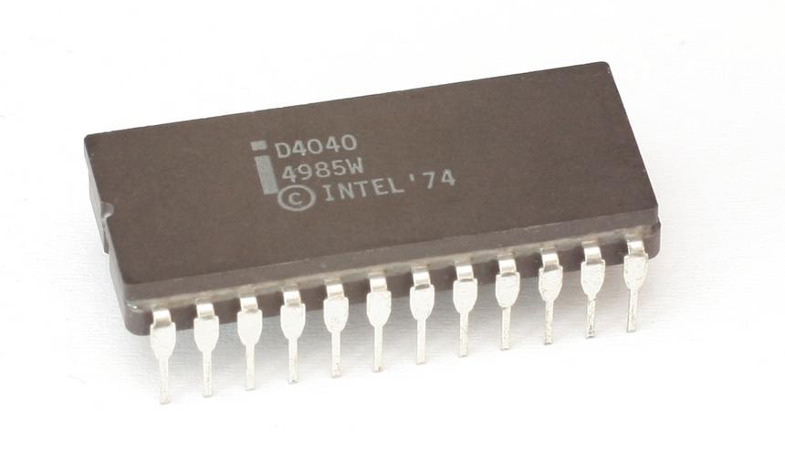Несмотря на доступность процессора, его область применения ограничилась калькулятором Busicom 141-PF. Также долгое время ходили слухи, что Intel 4004 применялся в конструкции бортового компьютера беспилотного космического аппарата «Пионер-10», который стал первым межпланетным зондом, совершившим пролет вблизи Юпитера. Эти слухи напрямую опровергаются тем, что бортовые компьютеры «пионера» имели 18- или 16-битную разрядность, тогда как Intel 4004 был 4-битным процессором. Впрочем, стоит отметить, что инженеры NASA рассматривали возможность его использования в своих аппаратах, однако посчитали чип недостаточно испытанным для таких целей.
Спустя три года после выхода процессора Intel 4004 увидел свет его преемник — 4-битный Intel 4040. Чип производился по тому же 10-мкм техпроцессу и работал на той же тактовой частоте 740 кГц. Тем не менее, процессор стал немного «сложнее» и получил более богатый набор функций. Так, 4040 содержал 3000 транзисторов (на 700 больше, чем у 4004). Форм-фактор процессора остался прежним, однако вместо 16-пинового стали использовать 24-пиновый DIP. Среди улучшений 4040 стоит отметить поддержку 14 новых команд, увеличенную до 7 уровней глубину стека, а также поддержку прерываний. «Сороковой» использовался в основном в тестовых устройствах и управлении оборудованием.
Intel 8008
Помимо 4-битных процессоров, в начале 70-х годов в арсенале Intel появилась и 8-битная модель — 8008. По своей сути чип представлял собой 8-битную версию процессора 4004 с меньшей тактовой частотой. Не стоит этому удивляться, потому как разработка модели 8008 велась параллельно с разработкой 4004. Так, в 1969 году компания Computer Terminal Corporation (впоследствии Datapoint) поручила Intel создание процессора для терминалов Datapoint, предоставив им схему архитектуры. Как и в случае с моделью 4004, Тэд Хофф предложил интегрировать все микросхемы в один чип, и в CTC согласились с таким предложением. Разработка плавно шла к своему завершению, но в 1970 году CTC отказались как от чипа, так и от дальнейшего сотрудничества с Intel. Причины были банальны: инженеры Intel не вложились в установленные сроки разработки, а функциональность предоставленного «камня» не соответствовала запросам CTC. Договор между двумя компаниями был разорван, права на все наработки остались у Intel. Новым чипом заинтересовалась японская компания Seiko, инженеры которой хотели использовать новый процессор в своих калькуляторах.
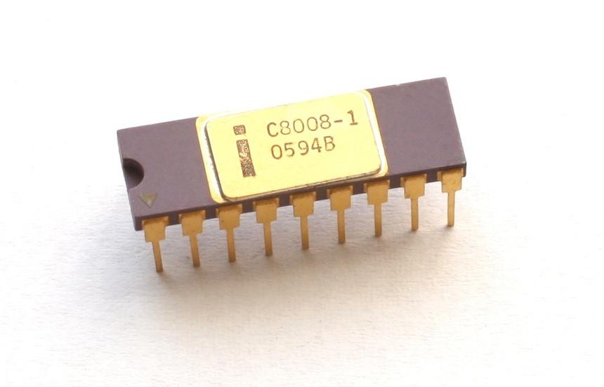Так или иначе, но после прекращения сотрудничества с CTC Intel переименовала разрабатываемый чип в 8008. В апреле 1972 года этот процессор стал доступен для заказа по цене 120 долларов США. После того как Intel осталась без поддержки CTC, в стане компании осторожно относились к коммерческим перспективам нового чипа, однако сомнения были напрасны — процессор хорошо продавался.
Технические характеристики 8008 были во многом схожи с 4004. Процессор производился в 18-пиновом форм-факторе DIP по 10-мкм технологическим нормам и содержал 3500 транзисторов. Внутренний стек поддерживал 8 уровней, а объем поддерживаемой внешней памяти составлял до 16 Кбайт. Тактовая частота 8008 была установлена на отметке 500 кГц (на 240 кГц ниже, чем у 4004). За счет этого 8-битный процессор Intel зачастую проигрывал в скорости 4-битному.

На основе 8008 было построено несколько компьютерных систем. Первой из них стал не очень известный проект под названием The Sac State 8008. Эта система разрабатывалась в стенах университета Сакраменто под руководством инженера Билла Пентца. Несмотря на то, что долгое время первым созданным микрокомпьютером считалась система Altair 8800, именно The Sac State 8008 является таковым. Проект был завершен в 1972 году и представлял полностью полноценный компьютер для обработки и хранения медицинских записей пациентов. Компьютер включал в себя непосредственно процессор 8008, жесткий диск, 8 Кбайт оперативной памяти, цветной дисплей, интерфейс для подключения к мейнфреймам, а также собственную операционную систему. Стоимость такой системы была крайне высокой, поэтому The Sac State 8008 так и не смог получить должного распространения, хотя довольно продолжительное время конкурентов в плане производительности у него не было.
Тем не менее, The Sac State 8008 — не единственный компьютер, построенный на базе процессора 8008. Были созданы и другие системы, такие как американская SCELBI-8H, французская Micral N и канадская MCM/70.
Intel 8080
Как и в случае с процессором 4004, спустя некоторое время 8008 также получил обновление в лице чипа 8080. Однако в случае с 8-битным решением изменения, внесенные в архитектуру процессора, были намного более существенные.
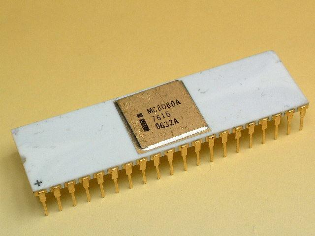Intel 8080 был представлен в апреле 1974 года. Прежде всего, нужно отметить, что производство процессора перевели на новый 6-мкм техпроцесс. Более того, при производстве использовалась технология N-МОП (n-канальные транзисторы) — в отличие от 8008, который производился с помощью P-МОП-логики. Использование нового техпроцесса позволило разместить на кристалле 6000 транзисторов. В качестве форм-фактора использовался DIP с 40 контактами.
Модель 8080 получила более богатый набор команд, который включал 16 команд передачи данных, 31 команду для их обработки, 28 команд для перехода с прямой адресацией, а также 5 команд управления. Тактовая частота процессора составила 2 МГц — в 4 раза больше, чем у предшественника. Также 8080 имел 16-разрядную адресную шину, которая позволяла производить адресацию 64 Кбайт памяти. Эти нововведения обеспечили высокую производительность нового чипа, которая примерно в 10 раз превышала таковую у 8008.
Процессор 8080 в своей первой ревизии содержал серьезную ошибку, которая могла приводить к зависанию. Ошибка была исправлена в обновленной ревизии чипа, получившей название 8080А и выпущенной только спустя полгода.
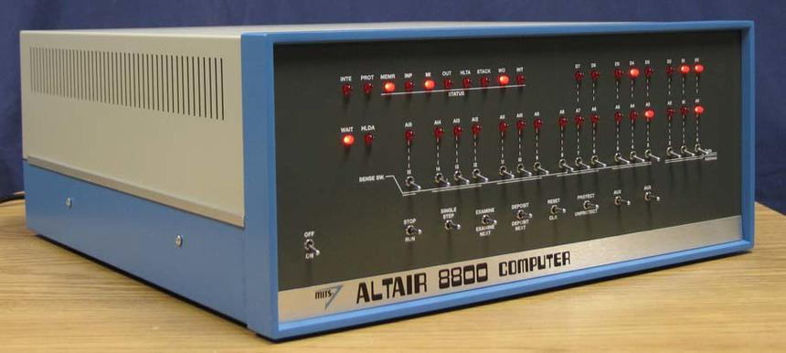Благодаря высокой производительности процессор 8080 стал очень популярным. Его применяли даже в системах управления уличным освещением и светофорами. Однако в основном его использовали в компьютерных системах, самой известной из которых являлась разработка компании MITS Altair-8800, представленная в 1975 году.
Altair-8800 работал на базе операционной системы Altair BASIC, а в качестве шины использовался интерфейс S-100, который спустя несколько лет стал стандартом для всех персональных компьютеров. Технические характеристики компьютера были более чем скромные. Он обладал всего лишь 256 байт оперативной памяти, у него отсутствовали клавиатура и монитор. Пользователь работал с компьютером путем ввода программ и данных в двоичной форме, щелкая набором маленьких ключей, которые могли занимать два положения: верхнее и нижнее. Результат считывался также в двоичной форме — по погасшим и светящимся лампочкам. Тем не менее, Altair-8800 стал настолько популярным, что такая маленькая компания, как MITS, попросту не успевала удовлетворять спрос на компьютеры. Популярности компьютера напрямую посодействовала его невысокая стоимость — 621 доллар США. При этом за 439 долларов США можно было приобрести компьютер в разобранном виде.
Возвращаясь к теме 8080, нужно отметить, что на рынке присутствовало множество его клонов. Тогдашняя маркетинговая ситуация в корне отличалась от того, что мы наблюдаем сегодня, и Intel было выгодно предоставлять сторонним компаниям лицензии на производство копий 8080. Производством клонов занималось множество крупных компаний, таких как National Semiconductor, NEC, Siemens и AMD. Да, в 70-е годы у AMD еще не было собственных процессоров — фирма занималась исключительно выпуском «ремейков» других кристаллов на собственных мощностях.
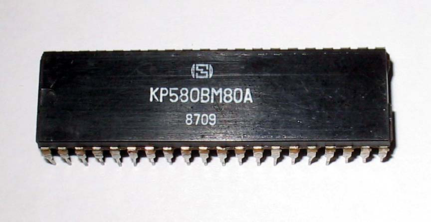Интересно, что существовала и отечественная копия процессора 8080. Она была разработана Киевским НИИ микроприборов и носила название КР580ВМ80А. Было выпущено несколько вариантов этого процессора, в том числе и для применения в военных объектах.
В 1976 году появилась обновленная версия чипа 8080, получившая индекс 8085. Новый кристалл изготавливался по 3 мкм техпроцессу, что позволило разместить на чипе 6500 транзисторов. Максимальная тактовая частота процессора составляла 6 МГц. Набор поддерживаемых инструкций содержал 79 команд, среди которых были две новые команды для управления прерываниями.
Zilog Z80
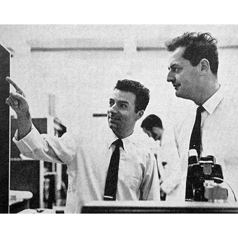Главным событием после выхода 8080 стало увольнение Федерико Фаджина. Итальянец не был согласен с внутренней политикой компании и решил уйти. Вместе с бывшим менеджером Intel Ральфом Унгерманном и японским инженером Масатоши Шимой он основал компанию Zilog. Сразу после этого началась разработка нового процессора, похожего по своей архитектуре на 8080. Так, в июле 1976 года появился процессор Zilog Z80, бинарно совместимый с 8080.
В сравнении с Intel 8080 Zilog Z80 имел много улучшений, например, расширенный набор команд, новые регистры и инструкции для них, новые режимы прерываний, два отдельных блока регистров, а также встроенную схему регенерации динамической памяти. Кроме этого, стоимость Z80 была намного ниже, чем 8080.
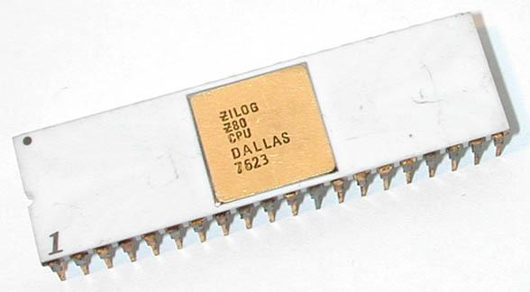Что касается технических характеристик, то процессор производился по 3-мкм технологическим нормам с применением технологий N-МОП и КМОП. Z80 содержал 8500 транзисторов, а его площадь равнялась 22,54 мм2. Тактовая частота Z80 варьировалась в пределах от 2,5 до 8 МГц. Разрядность шины данных составляла 8 бит. Процессор обладал 16-битной адресной шиной, а объем адресуемой памяти составлял 64 Кбайт. Z80 производился в нескольких форм-факторах: DIP40 или 44-контактных PLCC и PQFP.
Z80 очень быстро превзошел в популярности все конкурирующие решения, в том числе и 8080. Процессор применялся в компьютерах таких компаний, как Sharp, NEC и других. Также Z80 «прописался» в консолях Sega и Nintendo. Кроме этого, процессор использовался в игровых автоматах, модемах, принтерах, промышленных роботах и многих других устройствах.
ZX Spectrum
Отдельного упоминания достойно устройство под названием ZX Spectrum, несмотря на то, что наше сегодняшнее повествование не касается решений 80-х годов прошлого столетия. Компьютер разрабатывался британской компанией Sinclair Research и был выпущен в 1982 году. ZX Spectrum был далеко не первой разработкой SR. В начале 1970-х годов глава компании и ее главный инженер Клайв Синклейр (Clive Sinclair) занимались тем, что продавали радиодетали по почте. Ближе к середине 70-х Клайв создал карманный калькулятор, который стал первым успешным изобретением фирмы. Отметим, что в компании не занимались непосредственно разработкой калькулятора. Им удалось найти удачное сочетание дизайна, функциональности и стоимости, благодаря которому устройство отлично продавалось. Следующим устройством Sinclair также стал калькулятор, но с более богатым набором функций. Устройство предназначалось для более «продвинутой» аудитории, но снискать особого успеха ему не удалось.
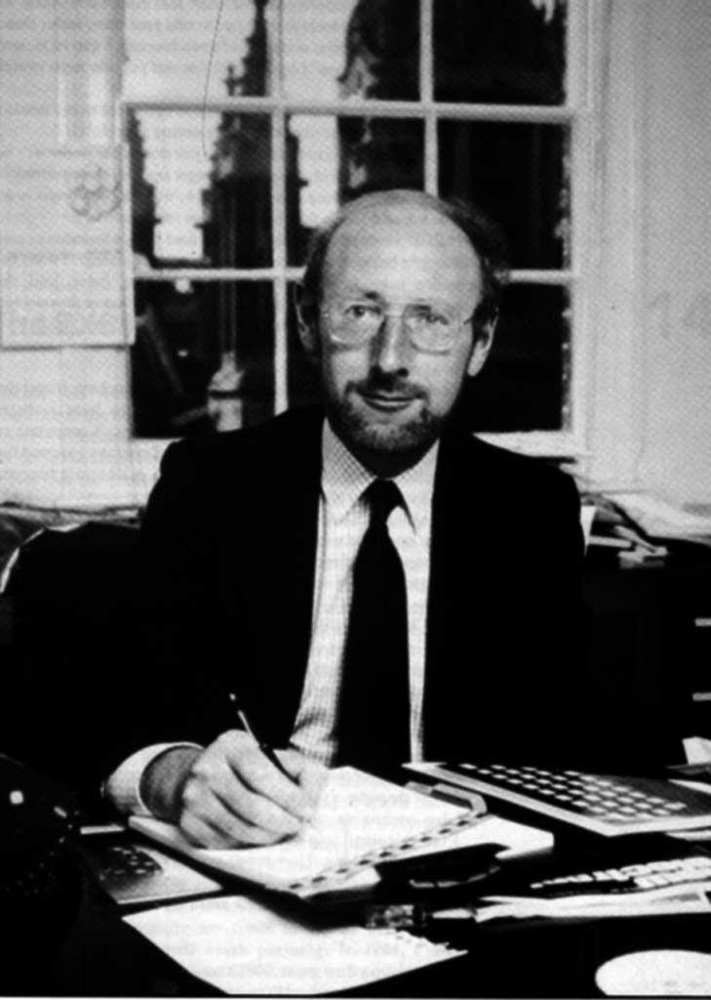После калькуляторов Синклейр решил сосредоточиться на разработке полноценных компьютеров, и в промежутке между 1980 и 1981 годами появились домашние компьютеры линейки ZX: ZX80 и ZX81. Но самым популярным решением стала выпущенная в 1982 году система под названием ZX Spectrum. Изначально она должна была выйти на рынок под названием ZX83, но в последний момент было принято решение переименовать девайс, чтобы подчеркнуть поддержку компьютером цветного изображения.
ZX Spectrum стал популярным, прежде всего, благодаря своей простоте и дешевизне. Компьютер внешне напоминал игровую приставку. К нему через внешние интерфейсы подключались телевизор, который использовался в качестве монитора, и кассетный магнитофон, выполняющий функцию накопителя. На корпусе «Спектрума» располагалась многофункциональная клавиатура на 40 резиновых клавиш. Каждая кнопка имела до семи значений при работе в разных режимах.
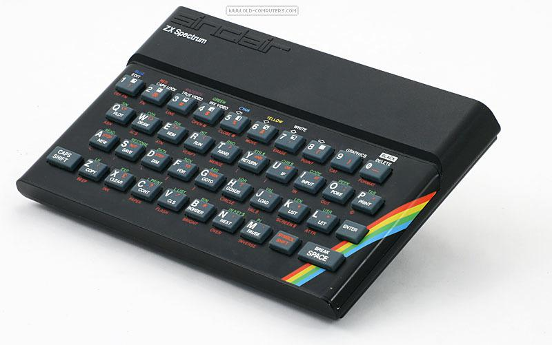Внутренняя архитектура ZX Spectrum также была довольно простой. Благодаря использованию технологии ULA (Uncommitted Logic Array) основную часть схемы компьютера удалось разместить на одной микросхеме. В качестве центрального процессора использовался Zilog Z80 с тактовой частотой 3,5 МГц. Объем оперативной памяти составлял 16 или 48 Кбайт. Правда, некоторые сторонние производители выпускали модули памяти объемом 32 Кбайт, которые вставлялись в один из портов расширения «Спектрума». Объем ПЗУ составлял 16 Кбайт, причем в память был вшит диалект языка BASIC под названием Sinclair BASIC. ZX Spectrum поддерживал вывод лишь однобитного звука через встроенный динамик. Компьютер работал лишь в графическом режиме (8 цветов и 2 уровня яркости). Следовательно, поддержки текстового режима не было. Максимальное разрешение при этом составляло 256x192 пикселов.
Начальная цена на ZX Spectrum была установлена на отметке 125 фунтов стерлингов. Интересно, что Sinclair Research всё ещё продавали свои устройства с помощью почты. За первые 17 месяцев после выхода «Спектрума» было продано более миллиона компьютеров.
В отличие от Западной Европы, где наряду с ZX Spectrum отлично продавались другие компьютеры (те же Atari и Commodore), в СССР устройство Sinclair было единоличным лидером продаж. Почему? Причина прежде всего крылась в низкой стоимости «Спектрума»: компьютер не облагался пошлинами и по цене был доступен многим советским гражданам. Устройства Atari и Commodore проделывали огромный путь, прежде чем попасть на прилавки советских магазинов, а их цена была значительно выше в сравнении с ZX Spectrum. Кроме этого, выяснилось, что большинство деталей «Спектрума» при необходимости можно было заменить отечественными. Даже «секретная» микросхема ULA была реализована на советских комплектующих. Как вы уже догадались, единственным незаменимым компонентом системы оставался лишь процессор Z80.
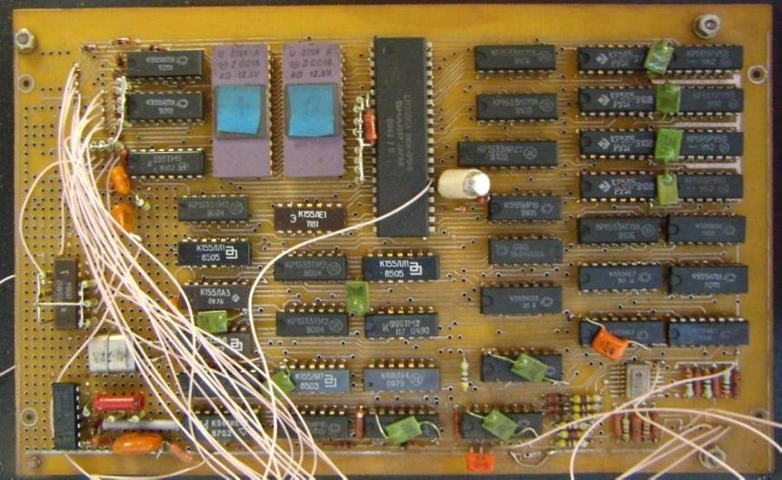В итоге в СССР появилось множество клонов «Спектрума» с отечественными комплектующими: «Львов-48», «Москва-48», «Пентагон-48» и другие. К тому же добрая часть реплик была создана самими радиолюбителями, самостоятельно.
Популярности ZX Spectrum сыграло на руку огромное количество различных программ и игр. Компьютер также был довольно удобен для обучения программированию. Поэтому считается, что на «Спектруме» выросло целое поколение отечественных программистов.
На 90-е годы пришел пик популярности платформы ZX Spectrum на постсоветском пространстве. К этому времени на Западе компьютер уже потерял свою актуальность, а отечественные энтузиасты всё ещё создавали улучшенные клоны «Спектрума». Тем не менее, в продаже появлялись новые компьютеры, и ZX Spectrum начал постепенно отходить на второй план.
Motorola 6800
Не стоит думать, что у Intel не было конкурентов. Например, компания Motorola активно продвигала свой процессор 6800. Разработка чипа началась в 1969 году под руководством инженера Тома Беннетта, и, так же, как и 8080, «камень» Motorola был выпущен в 1974 году. Кристалл выпускался по 6-мкм техпроцессу, а его тактовая частота составляла те же 2 МГц. Интересно, что при производстве 6800 также использовалась технология N-МОП. В качестве форм-фактора использовался DIP40, а набор инструкций процессора содержал 78 команд. Отметим, что 6800 имел 16-битную адресную шину с прямой адресацией 64 Кбайт памяти.
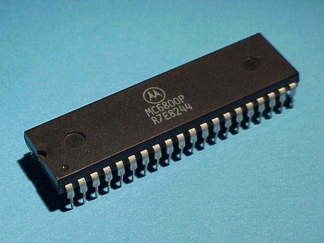Процессор использовался в огромном количестве персональных компьютеров. Среди них были и платы разработки MEK6800D2, SWTPC 6800, и компьютеры Ohio Scientific, Midwest Scientific и Smoke Signal Broadcasting, а также решение MITS Altair 680. Последний являлся полным аналогом системы Altair-8800. Как вы уже догадались единственным исключением было то, что использовался процессор 6800 вместо 8080.
На базе решения Motorola были изготовлены несколько микроконтроллеров, которые использовались в промышленных роботах и некоторых персональных компьютерах. Например, чип 6801 включал в себя, помимо процессора, 2 Кбайт ПЗУ, 128 байт ОЗУ и поддерживал аппаратно реализованное умножение.
Как и Intel, Motorola предоставляла лицензии на производство клонов 6800 сторонним компаниям. Поэтому на рынке появились копии процессора от Freescale и Hitachi, поддерживавшие более богатый набор функций. Например, они работали с расширенным набором команд.
MOS Technology 6502
В то же время дела внутри компании шли не так гладко. И в 1974 году команда разработчиков процессора 6800 в полном составе присоединилась к компании MOS Technology. Сразу же началась работа над чипом, схожим по архитектуре с решением Motorola. И в 1975 году свет увидел процессор 6501.
Однако продажи «камня» были прекращены вскоре после его анонса. Причиной этого стал иск Motorola к MOS Technology из-за совместимости процессора 6501 с системами на базе 6800. Прошло еще несколько месяцев, прежде чем в продажу поступила обновленная версия устройства MOS Technology с индексом 6502.
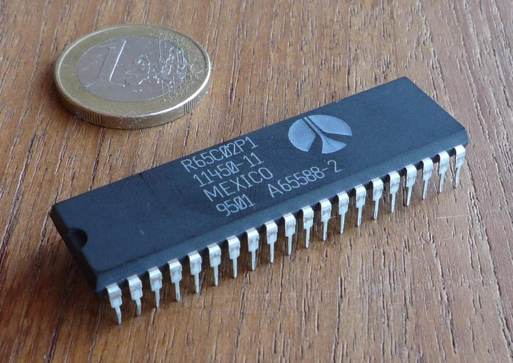Характеристики этого чипа были намного скромнее таковых у Intel 8080 и Motorola 6800. «Пятьсот второй» представлял собой 8-разрядный процессор с 16-битной адресной шиной с поддержкой адресации до 64 Кбайт оперативной памяти. Его тактовая частота составляла всего 1 МГц, однако за счет доработанных способов адресации памяти и коротких циклов исполнения команд он не так сильно уступал в производительности конкурирующим решениям. Как и все процессоры 70-х годов, 6502 имел CISC-архитектуру, однако некоторые режимы адресации кристалла впоследствии были характерны для RISC-архитектур.
Главной отличительной особенностью процессора стала его цена. Она составляла всего лишь 25 долларов США, тогда как модели Intel 8080 и Motorola 6800 продавались по цене не менее 180 долларов. Это вынудило компании снизить цены на свои устройства, однако было уже поздно — продажи 6502 только росли. Достичь столь низкой стоимости CPU компании MOS Technology удалось за счет применения технологии исправления масок. Сами маски представляли собой большие изображения слоев кристалла микросхемы, впоследствии уменьшаемые с помощью фотографического процесса для получения слоев нужного размера. Абсолютно все маски имели неточности. Эти неточности зачастую дублировались на кристалл, из-за чего примерно 70% производимых чипов попросту оказывались нерабочими. В MOS Technology нашли способ исправления огрехов в масках, что позволило значительно увеличить процент выхода рабочих кристаллов, а следовательно, намного снизить себестоимость каждой микросхемы. Так, число рабочих кристаллов 6502 от их общего количества составляло уже около 70%.
Вдобавок к основной версии процессора было выпущено множество модификаций, получивших индексы от 6503 до 6507. У некоторых из них было урезано число функций в целях еще большего удешевления.
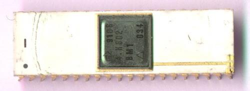MOS Technology распространяли лицензии на производство процессоров 6502. В итоге такие компании, как Rockwell International, GTE, Synertek занимались производством клонов. Существовал и советский аналог 8502 под названием 4К602ВМ1.
6502 нашел применение в огромном количестве персональных компьютеров. Так, процессор использовался в компьютерах Apple I, Apple II и Commodore PET. Также 6502 служил основой в линейке домашних десктопов Atari и BBC Micro. Кроме этого, разработка MOS Technology применялась и в игровых приставках Atari 2600 и Nintendo Famicom.